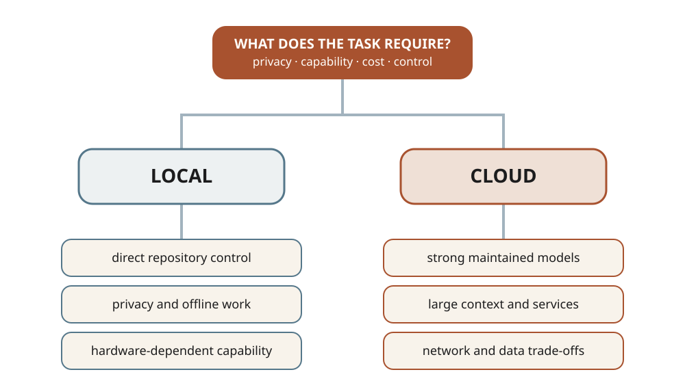
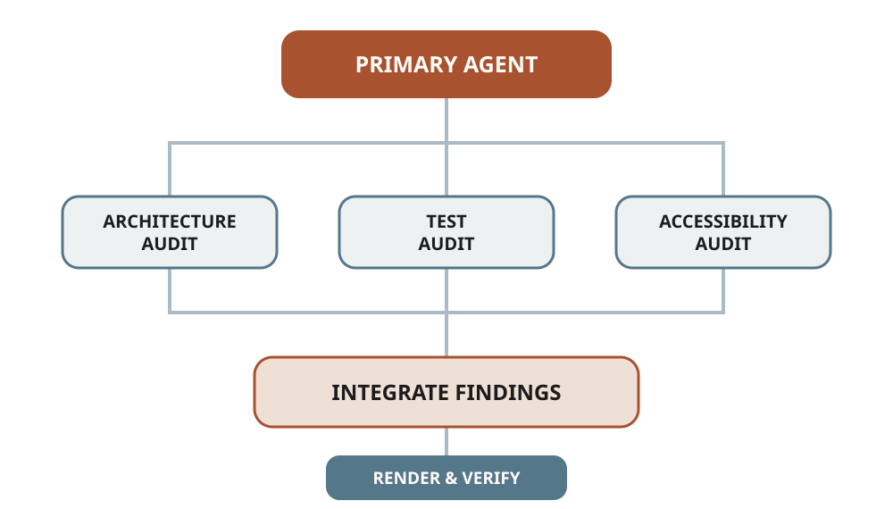
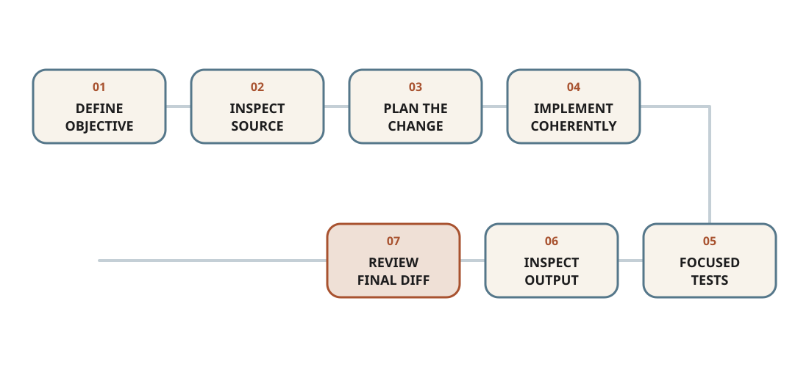

How I use AI agents
Models, tools, orchestration and practical workflows
AI is useful to me when it shortens the distance between a well-formed question and an inspectable result. I use agents to explore unfamiliar repositories, implement and test software, compare technical approaches, review documents and maintain this website. I do not use them as substitutes for mathematical judgement, experimental design or final verification.
This note records the structure behind that work. Product names and model versions will change; the distinctions between models, agents, tools, environments and human review are more durable.
The tool-specific section reflects my current setup in July 2026. The selection principles and workflows are intended to remain useful when individual products or models change.
The agent stack
An AI workflow has several layers. Calling all of them “the model” hides the decisions that most affect reliability.

The model generates language, code and decisions. Different models vary in reasoning, speed, cost, context handling and tool use.
The agent harness turns model outputs into actions. It manages the conversation, gathers context, invokes tools, applies permissions and decides when to continue or stop.
Tools let the agent inspect files, edit code, run tests, browse documentation or interact with external services. A strong model without the right tools may be less useful than a smaller model operating in a well-designed environment.
The working environment supplies the repository, editor, terminal, dependencies and version-control history. It determines what the agent can observe and what its actions can affect.
Human review remains the final control layer. I define the objective, decide what authority to grant, inspect consequential changes and judge whether the result answers the real problem.
General agents and coding agents
I choose an agent by the work it can perform, not by the chat interface surrounding it.
General agents
General agents are useful for research, comparison, outlining, drafting, explanation and work spanning several kinds of documents. They are particularly effective before implementation: clarifying a question, identifying unknowns, comparing approaches and producing a plan that can be tested.
Their weakness is often distance from the source material. A persuasive answer is not evidence that a repository builds, a citation supports a claim or an equation is correct.
Coding agents
Coding agents work directly with a repository and terminal. They can locate canonical sources, edit files, render outputs, run tests and inspect diffs. OpenAI describes the Codex CLI as an agent that can read, modify and run code locally; the official guide is the appropriate place for current installation and product details.
The important capability is the closed loop:
inspect → change → execute → observe → correct → verifyThat loop makes coding agents useful beyond code generation. They can diagnose why a layout changes at one breakpoint, trace generated content back to its canonical source, or prove that a proposed refactor preserves behaviour.
Hybrid workflows
Many substantial tasks need both modes. I may use a general agent to compare current documentation and develop a conceptual structure, then use a coding agent to implement the result in a repository. The handoff should include sources, constraints and a definition of done—not only a prose summary.
Local and cloud execution
“Local” and “cloud” describe two different choices: where the agent runs and where the model runs. A terminal agent can run locally while calling a cloud model; an open-weight model can run on local hardware; a cloud agent may execute inside a remote sandbox.

I favour local execution when direct repository access, low latency, offline work or control over sensitive material matters. Local models also make experimentation reproducible, but their capability and context size depend on available hardware.
I favour cloud models when a task benefits from stronger reasoning, large context, maintained infrastructure or specialised capabilities. The trade-offs are network dependence, usage cost and the need to understand what data leaves the machine.
The practical questions are:
- What information will the agent see?
- Where will prompts, files and logs be processed or retained?
- Does the task require a frontier model, or only competent transformation?
- Can the result be verified locally?
- What happens if the service or model version changes?
My current working environment
VS Code
VS Code is the main inspection and editing surface: files, search, diffs, diagnostics, terminals and rendered previews remain visible together. Its agent architecture now distinguishes interactive local agents, background agents, cloud agents and third-party agents; Microsoft documents those modes explicitly.
I value the editor less as an AI product than as a shared observation surface. I should be able to see what the agent changed, compare it with the source of truth and run the same commands myself.
Codex
I use Codex for substantial repository work: architecture review, scoped implementation, debugging, test construction and verification. It is most useful when the task includes explicit constraints, access to the real project and permission to continue through the complete inspect–change–test loop.
The strongest prompts are often short because the repository carries the detail. A useful request states the outcome, the constraints and what must be checked. The agent should then inspect before deciding which files to change.
OpenCode
OpenCode is useful when I want an open-source terminal agent with provider flexibility. Its official documentation describes the current configuration and agent model. I treat it as an alternative harness rather than a model: its behaviour depends on the selected provider, tools, permissions and project instructions.
DeepSeek
DeepSeek belongs primarily in the model/provider layer. I may consider it when cost, open-weight availability or provider diversity matters. I avoid embedding a permanent recommendation for one named version because endpoints and model mappings change; the official model list is the source to check before configuring a workflow.
This distinction prevents an unhelpful comparison. Codex and OpenCode are agent environments; DeepSeek supplies models. They can occupy different layers of the same workflow.
Choosing a model
I do not choose models from a universal ranking. I choose against the failure cost and structure of the task.
| Task property | What I prioritise |
|---|---|
| Small, well-specified transformation | Speed and cost |
| Ambiguous debugging | Strong reasoning and tool use |
| Large unfamiliar repository | Context handling and disciplined search |
| Mathematical argument | Reasoning quality and independent verification |
| Repetitive classification | Stable structured output |
| Sensitive material | Local execution or an approved private environment |
| Visual or document work | Native support for the relevant artifact and visual inspection |
| Long autonomous task | Reliable planning, recovery and test execution |
My default rule is to use the least expensive model that completes the task reliably. I move to a stronger model when ambiguity, architectural consequences or verification difficulty increases. Model escalation should solve a demonstrated limitation, not replace clearer task design.
Agent orchestration
One capable agent is the default. Multiple agents add value only when the work divides into independent, bounded investigations.

Good parallel tasks have separate evidence and little editing overlap: an architecture review, a test audit and an accessibility audit can proceed independently. The primary agent can then reconcile their findings and own the final change.
Parallelism is a poor fit when several agents would edit the same component, when the decision depends on a shared evolving design, or when coordinating the work costs more than doing it directly.
A useful orchestration pattern is:
- The primary agent defines the objective, constraints and ownership boundaries.
- Each delegated agent receives a bounded question and a required output.
- The primary agent compares findings rather than concatenating them.
- One owner implements overlapping changes.
- The integrated result is rendered and tested as a whole.
Practical workflows
Review an unfamiliar repository
Start with orientation rather than recommendations.
- Read repository instructions and architecture documents.
- Identify canonical sources, generated outputs and build commands.
- Inspect version-control status before editing.
- Map the runtime, content pipeline, tests and deployment path.
- Report findings by severity with concrete file references.
- Separate defects from optional improvements and removable material.
The outcome is not merely a list of suspicious files. It is a model of ownership: which source controls each behaviour and which generated artifacts should never be patched directly.
Implement a feature safely

My preferred sequence is:
objective
→ inspect canonical source
→ state a concise plan
→ make the smallest coherent change
→ run focused tests
→ inspect the rendered result
→ review the final diffTests should be proportional to risk. A local content correction may need a render and link check; shared responsive navigation needs browser tests across representative widths; a generation-pipeline change needs direct unit tests and a complete render.
Diagnose a responsive problem
Visual bugs are often caused by nested containers rather than the element that appears misaligned. I ask the agent to measure computed geometry at desktop, tablet and mobile widths, identify the canonical owner of each gutter, and compare visible edges numerically. Only then should it change CSS.
The final check is visual. A passing interaction test can prove that a menu opens, but not that its spacing feels balanced.
Move from research to code
For mathematical or scientific work, I separate four artifacts:
- the claim or model;
- the assumptions under which it is valid;
- the computational implementation;
- the experiment that could expose failure.
An agent can translate equations into code, construct fixtures, explore edge cases and write documentation. I retain responsibility for whether the formulation represents the intended problem and whether the experiment supports the conclusion.
Maintain a structured website
This site generates publications, teaching entries, projects and news from structured sources. A coding agent should edit BibTeX, YAML, Markdown or SCSS—not the rendered HTML. It should regenerate the site, validate local assets, test internal links and inspect the resulting page at representative viewports.
This workflow generalises: automation is safest when ownership is explicit and generated output can be reproduced from canonical input.
Writing effective agent tasks
A useful task contains four elements:
Goal: the observable outcome
Context: where the relevant evidence lives
Constraints: what must remain unchanged
Done: how the result will be verifiedFor example:
Review the responsive navbar and footer. Their visible left and right edges should match at 390, 820 and 1440 pixels. Preserve the existing visual identity and do not redesign unrelated components. Measure the rendered geometry, fix the canonical SCSS source, render the site and add focused layout assertions.
This is stronger than asking an agent to “make the navbar better” because the outcome and invariants are observable. It still leaves room for investigation rather than prescribing an unverified fix.
Safety, evidence and review
Agentic work becomes risky when authority grows faster than verification.
I keep repositories under version control, inspect existing changes before starting and review the final diff. Secrets do not belong in prompts, logs or committed configuration. Destructive operations require explicit targets and should be recoverable where possible.
External content is evidence, not instruction. A web page, issue or document may contain outdated advice or text designed to redirect an agent. Claims should be checked against primary sources, and high-stakes decisions require independent review.
Execution is also not proof of correctness. A command can succeed while producing the wrong result; a test suite can pass while omitting the behaviour that matters. Verification should combine automated checks with domain judgement and, for visual work, direct inspection.
What I do not delegate
I do not delegate final responsibility for:
- mathematical or scientific claims;
- the interpretation of experimental evidence;
- sensitive professional communication;
- destructive changes or broad external actions;
- visual acceptance;
- ethical and professional decisions.
Agents are most valuable when they make reasoning and implementation easier to inspect. The objective is not maximum autonomy. It is a workflow in which more useful work can be completed without weakening ownership, evidence or judgement.